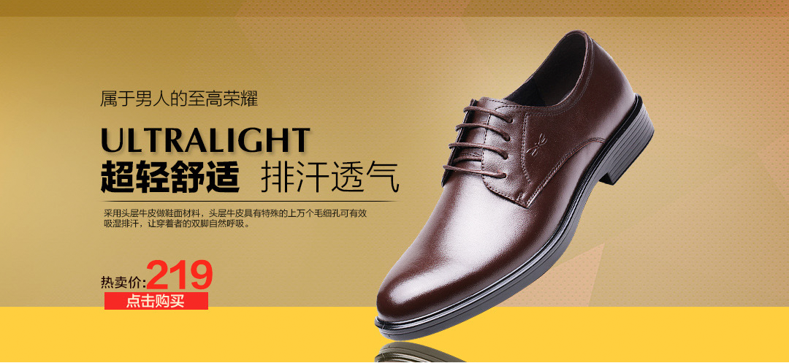

任何问题和需要， 都可以随时联系我们的哈 红们的哈 红蜻蜓全体售后
大商创
任何一双鞋子不要穿着的太紧，一定要宽松、舒适，以免 对脚部造成不必要的伤害。实在太大影响行走的话，您可 以放个鞋垫试试或者在收到货7天内与我们的客服人员联 系，我们会为您更换让您满意的鞋，非常感谢您的信任和 支持，您的鞋子在后续穿着过程中如有任何问题和需要， 都可以随时联系我们的哈 红蜻蜓全体售后客服很高兴能为 您服务 祝您生活愉快 并期待您的下次光临哦~
任何一双鞋子不要穿着的太紧，一定要宽松、舒适，以免 对脚部造成不必要的伤害。实在太大影响行走的话，您可 以放个鞋垫试试或者在收到货7天内与我们的客服人员联 系，我们会为您更换让您满意的鞋，非常感谢您的信任和 支持，您的鞋子在后续穿着过程中如有任何问题和需要， 都可以随时联系我们的哈 红蜻蜓全体售后客服很高兴能为 您服务 祝您生活愉快 并期待您的下次光临哦~